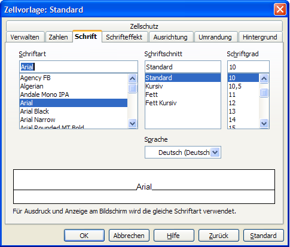
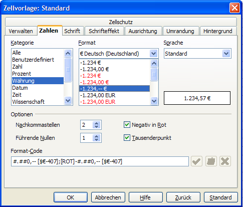
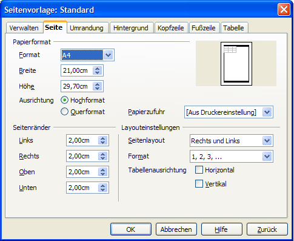
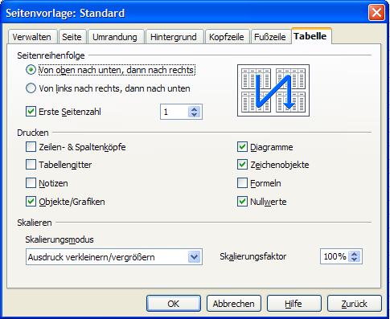
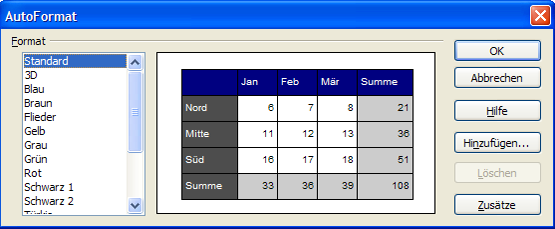

| [zurück] | [Hauptmenü] | [weiter] |
| [PDF] | ||
Tabellenblätter formatieren
herausgegeben von
dem OpenOffice.org Dokumentations-Projekt
Inhaltsverzeichnis:
Anwenden einer Formatierung...
...auf eine Zelle/ einen Zellbereich
...auf eine Seite
1. Anwenden einer Formatierung
a) ...auf eine Zelle/einen Zellbereich
Es gibt zwei Möglichkeiten, einen Zellbereich oder eine Zelle zu formatieren, entweder...
- über Formatvorlagen oder
- über das Kontextmenü (rechter Mausklick -> 'Zellen formatieren...') in einem markierten Bereich einer Tabelle.
Lassen Sie uns die erste Möglichkeit ausprobieren.
- Öffnen Sie das Formatvorlagen-Fenster, in dem Sie in der Menüleiste unter 'Format' - 'Formatvorlagen' wählen (oder <F11> drücken).
Im Formatvorlagen-Fenster stehen Ihnen verschiedene vorgefertigte Designs zur Verfügung. Sie können die Standard-Vorlage so anpassen wie Sie möchten:
- Wählen Sie die Standard-Formatvorlage: Markieren Sie 'Standard' und klicken Sie mit der rechten Maustaste, um das Kontextmenü aufzurufen.
- Wählen Sie 'Ändern...'.

Dieses neue Fenster umfasst alle Einstellungen, die Sie benötigen, um
Ihre Zellen zu formatieren: Schriftart, Ausrichtung, Zahlen etc.. Tatsächlich wird letztere Einstellung am Häufigsten benutzt.
Auf der Registerkarte 'Zahlen' finden Sie links verschiedene Kategorien für Zahlen, unter anderem auch 'Währungen'. Hier können Sie auswählen, mit welcher Währungseinheit Sie arbeiten wollen und wie die Zahlen dargestellt werden sollen.

Wählen Sie Währung, Sprache, Darstellungsart, die Zahl der Nachkommastellen etc..
In dem weißen Kasten rechts sehen Sie ein Beispiel als Vorschau.
Wenn Sie fertig sind, klicken Sie auf den 'OK'-Button. Diese Formatierung wird jetzt auf alle Zellen mit Standard-Formatierung angewandt.
|
|
Wenn Sie mit dem Format einiger Zellvorlagen nicht einverstanden sind, aber nicht die gesamte Standard-Formatierng ändern möchten, dann klicken Sie im Formatvorlagen-Fenster mit der rechten Maustaste und wählen Sie im erscheinenden Kontextmenü 'Neu....'. So können Sie Ihre eigene Formatvorlage anlegen. Wiederholen Sie die selben Vorgänge, die Sie vielleicht auch bei der Änderung des Standard-Formats durchgeführt haben. Nachdem Sie Ihrer neuen Vorlage unter der Registerkarte 'Verwalten' einen Namen gegeben haben und 'OK' geklickt haben, erscheint die Formatvorlage im Formatvorlagen-Fenster. Um die neue Formatvorlage auf eine oder mehrere Zellen anzuwenden, markieren Sie den betreffenden Bereich und doppelklicken Sie auf den Vorlagen-Namen. |
b) ...auf eine Seite
Wieder passiert alles über die Formatvorlagen.
Klicken Sie auf das zweite Icon oben links im Formatvorlagen-Fenster um die 'Seitenvorlagen' aufzurufen.
Klicken Sie rechts auf 'Standard' und wählen 'Ändern...'.
alternativ: Wählen Sie in der Menüleiste 'Format' - 'Seite...'.
Das Fenster, das nun erscheint, besitzt einige neue Registerkarten:

Hinweis:
Hier können Sie die Kopf- und Fußzeilen Ihres
Tabellenblatts bearbeiten und die Hintergrundfarbe einstellen.
Wir widmen uns allerdings der Registerkarte 'Seite':
- Hier können Sie Format, Seitenlayout (Hoch- oder Querformat) und Seitenränder einstellen. Die Änderungen können Sie in der Miniatur-Vorschau auf der rechten Seite betrachten.

Unter der Registerkarte 'Tabelle' finden Sie weitere Einstellungen, die sich praktisch von selbst erklären.
Hier legen Sie fest was in welcher Reihenfolge und in welcher Größe gedruckt wird.
Unter 'Skalieren' können Sie den Ausdruck Ihrer Tabelle vergrößern oder verkleinern oder mit 'Ausdruck auf Seitenzahl anpassen' die exakte Zahl der Druckseiten vorzugeben, auf die Ihre Tabelle passen soll. Die Größe des Druckbildes wird dann so angepasst, dass die Anzahl der Seiten genau Ihrer Vorgabe entspricht.
2. Verwenden der AutoFormat-Funktion
Achtung: Um diese Funktion zu nutzen, müssen Sie einen Bereich auf dem Tabellenblatt, den Sie formatieren wollen, markieren. Diese Funktion ist nicht für eine oder zwei Zellen, sondern für einen ganzen Abschnitt gedacht.
Markieren Sie einen Bereich in einer Tabelle und klicken Sie dann in der Menüleiste auf 'Format' - 'AutoFormat'.

Unglaublich! Es scheint, als ob die ganze Vorlagenarbeit automatisch durchgeführt wurde! :-)
Sie müssen nur eine der Vorlagen auszuwählen.
Natürlich können Sie auch Ihr eigenes Format erstellen (den 'Hinzufügen....'-Button finden Sie rechts) und, eventuell, löschen, wenn Sie der Meinung sind, dass das Design aus der Mode ist!
Klicken Sie auf 'Zusätze', um einige weitere Einstellungen vorzunehmen. Im AutoFormat-Fenster wird Ihnen eine Vorschau dargestellt.
Hinweis: Wenn Sie eine mit AutoFormat durchgeführte Formatierung rückgängig machen möchten, markieren Sie den entsprechenden Bereich, klicken Sie mit der rechten Maustaste darauf und wählen Sie im Kontextmenü 'Standard'.
3. Mitwirkende
Autor: Sophie Gautier
deutsche Übersetzung: RPK Kempten
Korrektur & Überarbeitung: Katrin Räuber
letzte Änderung: 20.09.2005
Kontakt:
OpenOffice.org Documentation Project -
http://documentation.openoffice.org
OpenOffice.org auf Deutsch -
http://de.openoffice.org
| [zurück] | [Hauptmenü] | [weiter] |
| [PDF] | ||